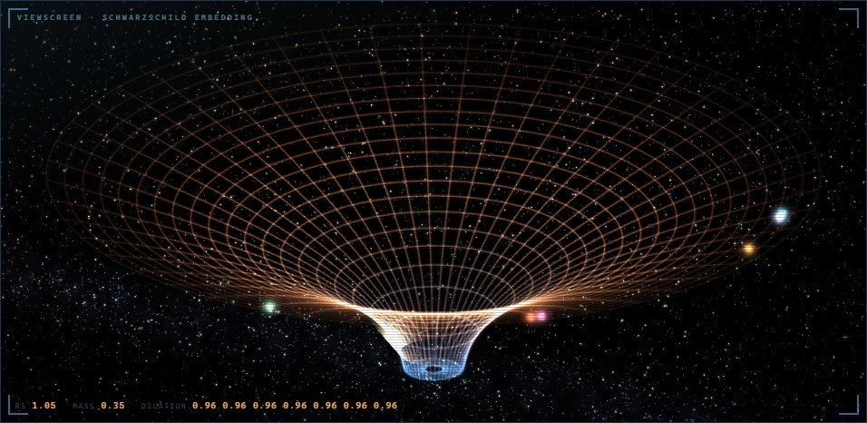

A sound you can watch
The centre of the panel is the shape space takes around a black hole. The lights orbiting it are the synth’s own modulators — its LFOs, envelopes and random source — each on its own orbit, each slowed by the gravity it sits in. Push MASS and you see the well deepen and the lights slow as you hear the sound thicken; when a light stops on the screen, that movement has stopped in the sound. Drag to turn the view, use the wheel to tilt it.
